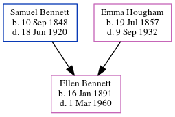

Mabel Gertrude Lawrence (née Waterman) 1887 - c1978
[ Home ] | [ Calendar ] | [ Surnames Index ] | [ Errors ] | [ Family History ]Mabel Waterman, the wife of Edward James S Lawrence (the great-uncle of Nigel Horne), was born in St Lawrence, Thanet, Kent, England on 7 Jul 18871,2,3,4 and married Edward (a general builder's labourer with whom she had 1 child, Edward Douglas) in Thanet, Kent, England around Nov 19065.
During her life, she was living at 2 Clifton Road, St Lawrence in Thanet on 2 Apr 19111; and at 22 Grosvenor Road, Ramsgate, Kent on 29 Sept 19392.
She died c. May 1978 in Thanet4.
Children
- Edward Douglas was born on 21 Oct 1907
Citations
- 1911 Census for England & Wales - Findmypast (was age 23 and the wife of the head of the household)
- 1939 Register - Findmypast (was the wife of the head of the household)
- England & Wales births 1837-2006 - Findmypast
- England & Wales deaths 1837-2007 - Findmypast
- England & Wales marriages 1837-2008 - Findmypast
Media
1939 Register Transcription - TNA-R39-1767-1767C-002-37
England & Wales marriages 1837-2008 - BMD/M/1906/4/AZ/000420/303
England & Wales births 1837-2006 - BMD/B/1887/3/AZ/000601/003
England & Wales deaths 1837-2007 - BMD/D/1978/2/AZ/000656/149
1939 Register - TNA/R39/1767/1767C/002/38
Family Tree
Map
Generated by ged2site. Last updated on Jul 3, 2024
Known Issues
No records of living with anyone